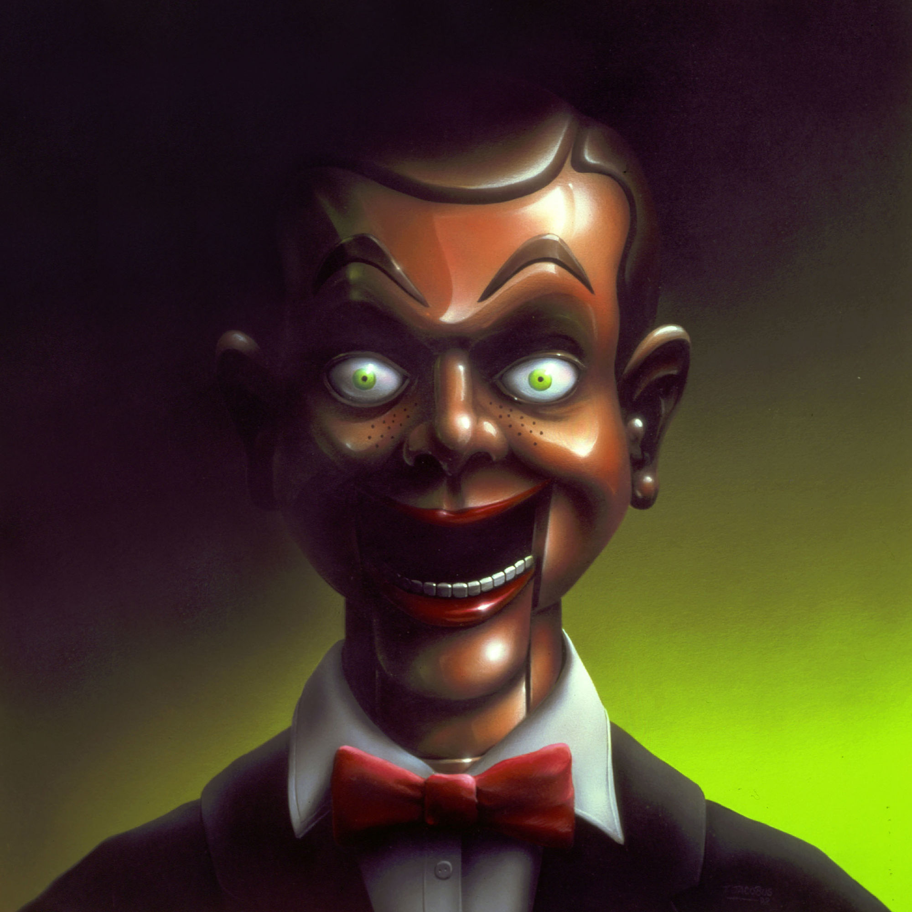

The Goosebumps series falls under the children's fiction, horror and thriller genres, although Stine characterizes the series as "scary books that are also funny".Each book features different child characters and settings. The primary protagonists are middle class and can be either male or female. The primary protagonists of a Goosebumps story are often situated in a remote location or somehow isolated from typical societal conventions. This can range anywhere from comfortable suburban areas to boarding schools, foreign villages or campsites. Books typically feature characters who either recently moved to a new neighborhood or are sent to stay with relatives.
The books in the Goosebumps series feature similar plot structures with fictional children being involved in scary situations. The books are mostly written in first person narrative, often concluding with twist endings. They contain surreal horror, with characters encountering the strange and supernatural. The author has plot devices that he follows throughout his Goosebumps books. Stine says he does not have any death in his stories, and the children in his novels are never put into situations that would be considered too serious. He attributed the success of his books to their absence of drugs, depravity and violence.

Goosebumps is a series of children's horror fiction novels by American author R. L. Stine, published by Scholastic Publishing. The stories follow child characters, who find themselves in scary situations, usually involving monsters and other supernatural elements. From 1992 to 1997, sixty-two books were published under the Goosebumps umbrella title. Various spin-off series were written by Stine: Goosebumps Series 2000, Give Yourself Goosebumps, Tales to Give You Goosebumps, Goosebumps Triple Header, Goosebumps HorrorLand, Goosebumps Most Wanted and Goosebumps SlappyWorld. Another series, Goosebumps Gold, was never released. Goosebumps has spawned a television series and merchandise, as well as a feature film, starring Jack Black as Stine.
Born in 1943, R.L. Stine started out writing jokes and funny stories. He moved to New York City in the mid-1960s, after graduating from The Ohio State University. In 1986, Stine published Blind Date, his first horror novel for young adults. He launched his popular Fear Street book series three years later. Beginning in 1992, Stine found international acclaim writing the Goosebumps series, which spurred the creation of additional series and nearly 200 books. Top-selling children's book author R.L. Stine was born Robert Lawrence Stine in Columbus, Ohio, on October 8, 1943. Stine began writing stories at the age of 9, using an old typewriter that he found. He initially made up jokes and humorous stories, not the spine-tingling tales that later made him famous. Stine's father worked as a shipping clerk in a warehouse, and his mother stayed home to look after young Robert and his two siblings. Stine has described himself as "a very fearful child," and said that his mother gave him one of his first serious frights by reading Pinocchio. "The original Pinocchio is terrifying ... He goes to sleep with his feet on the stove and burns his feet off!" Stine said of the classic tale, according to the HarperCollins website. At The Ohio State University, Stine remained focused on the lighter side of life. He edited the school's humor magazine, The Sundial, for several years. After graduating in the mid-1960s, he moved to New York City.